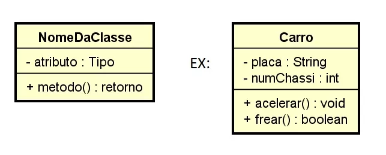

Um diagrama de classes é um dos modelos existentes no padrão UML, ele foi criado com o proposito de criar-se um tipo de abstração e compreensão entre a linguagem de programação
My Note
A Linguagem de modelagem unificada UML ajuda você a modelar sistemas de diversas maneiras. Um dos tipos mais populares na UML é o diagrama de classes. Bastante usado por engenheiros de software para documentar arquiteturas de software, os diagramas de classes são um tipo de diagrama da estrutura porque descrevem o que deve estar presente no sistema a ser modelado. Não importa seu nível de familiaridade com diagramas UML ou de classe, nosso software de UML online foi concebido para ser simples e fácil de usar.
A UML foi criada como um modelo padronizado para descrever uma abordagem de programação orientada ao objeto. Como as classes são os componentes básicos dos objetos, diagramas de classes são os componentes básicos da UML.
Existem 14 tipos de diagramas UML para o ajudar a modelar estes comportamentos.
Os diversos componentes em um diagrama de classes podem representar as classes que serão realmente programadas, os principais objetos ou as interações entre classes e objetos.
A forma de classe em si consiste em um retângulo com três linhas. A linha superior contém o nome da classe, a linha do meio, os atributos da classe e a linha inferior expressa os métodos ou operações que a classe pode utilizar. Classes e subclasses são agrupadas juntas para mostrar a relação estática entre cada objeto.
No primeiro exemplo abaixo, podemos ver o exemplo de como podemos construir uma classe para representar o código de forma compreensiva para linguagem humana.

Dois exemplos de um diagrama de classe
A UML foi criada como um modelo padronizado para descrever uma abordagem de programação orientada ao objeto. Como as classes são os componentes básicos dos objetos, diagramas de classes são os componentes básicos da UML. Os diversos componentes em um diagrama de classes podem representar as classes que serão realmente programadas, os principais objetos ou as interações entre classes e objetos.